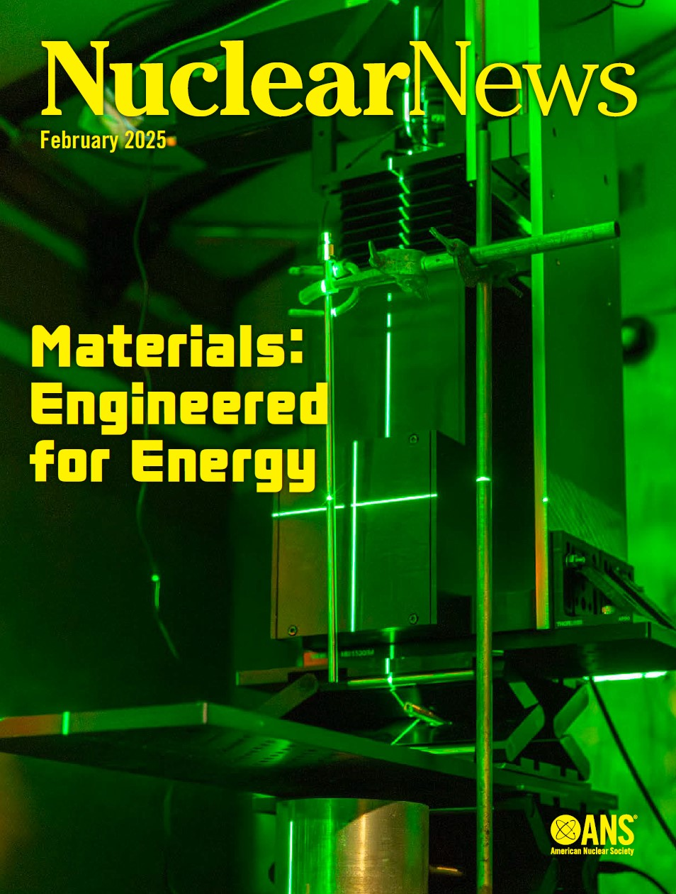
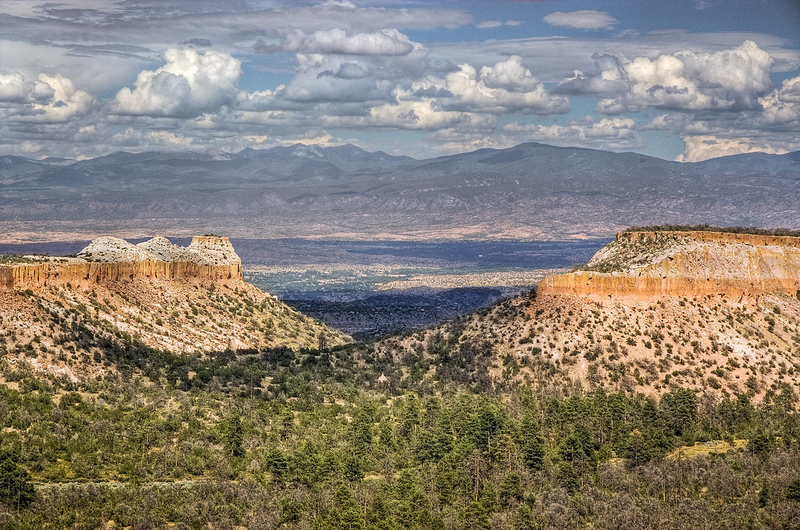

Materials
Energy-resolved
neutron imaging
Using neutron resonances and Bragg edges to investigate isotopic composition and material structure without cutting a sample open.
Neutron imaging / Materials science
I develop neutron imaging techniques, detectors, and software to explore materials from the inside out.
Staff scientist / Los Alamos Neutron Science Center

01 / Research
Materials
Using neutron resonances and Bragg edges to investigate isotopic composition and material structure without cutting a sample open.
Instrumentation
Developing photon-counting detector systems and event reconstruction methods that unlock new ways to measure with neutrons.
Software
Building open-source tools for neutron imaging acquisition and analysis, including HERMES and PLEIADES.
02 / Ideas in public
Also in print: neutron imaging at LANSCE in Nuclear News ↗

03 / A little background
My research has taken me from nuclear astrophysics to materials science. Today, I work on neutron imaging at LANSCE. Outside the lab, you'll often find me running the trails around Los Alamos.
More about meLet's connect